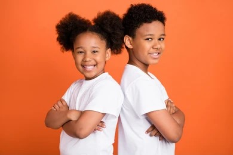

Fashion Category

11 December 2021 - Some interesting inspirations and camera settings during the photo session. We create something better with every shot.
Modern Post
11 December 2021 - Newspaper creates with a hobby. We focus on the development of our articles to provide engaging content.
Latest Trends
In the world of fashion, staying on top of trends is crucial. Our latest trends section explores the styles that are making waves in the industry today.
Fashion Bloggers
Meet the individuals who are shaping the fashion world. Veronica Beroldi and Anita Rumio bring their unique perspectives to our publication.